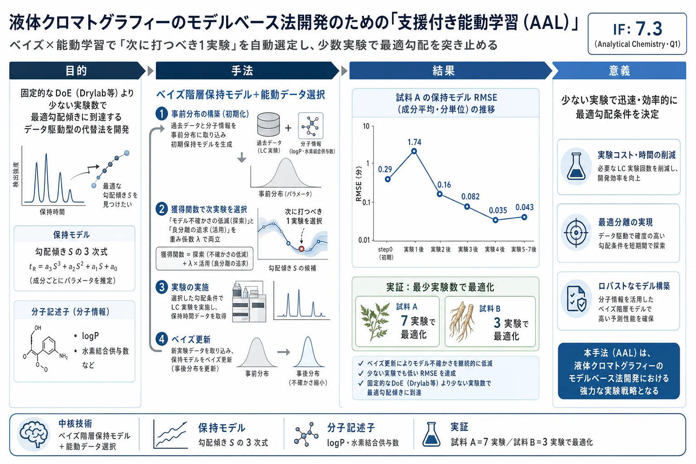

液体クロマトグラフィーのモデルベース法開発のための「支援付き能動学習（AAL）」

<!-- Bosten et al., Anal. Chem. 2024, 96, 13699−13709 の全訳密度日本語版。 理論・数式が中心の論文のため researcher レベル。数式はOCR崩れを標準形に復元して記載。 図（Figure 1–4）と補足情報（SI）中の図表は原文参照とする。 -->
書誌情報
- 標題（原題）: Assisted Active Learning for Model-Based Method Development in Liquid Chromatography
- 著者: Emery Bosten, Marie Pardon, Kai Chen, Valerie Koppen, Gerd Van Herck, Mario Hellings, Deirdre Cabooter（責任著者）
- 所属: ルーヴェン・カトリック大学（KU Leuven）薬学・薬理学部 医薬品分析部門（ベルギー・ルーヴェン）／ Janssen Pharmaceutica（ベルギー・ベールセ）Therapeutics Development & Supply
- 掲載誌・巻号・DOI: Analytical Chemistry, 2024, 96, 13699−13709. DOI: 10.1021/acs.analchem.4c02700
- インパクトファクター: 7.3（Analytical Chemistry, JCR 2024 / Clarivate。分析化学分野 Q1）
- 受理経過: 2024年5月24日受領／6月28日改訂／7月1日受理／7月9日公開。© 2024 American Chemical Society
- データ公開: ソースコードは GitHub（https://github.com/EmeryBosten/ALL_MD.git）で公開
- 補足情報（SI）: 追加の実験詳細・材料と方法・表・図（Table S1–S6, Figure S1–S18）が無料公開
補足: 本論文は「モデルベースのLC法開発（method development, MD）」を、ベイズ統計と能動学習（active learning, AL）で自動化する枠組みを提案する理論・方法論寄りの論文である。生薬QCそのものではないが、複雑試料の分離条件を「少ない実験数で」最適化する手法として、方剤・生薬の多成分HPLC条件設計にも直接応用できる。ダウンロード元が「TSUMURA & CO（ツムラ）」と本文脚注に記録されており（原文10ページ相当）、漢方QC実務での関心を示唆する。
要旨（Abstract）
近年、様々な分野で複雑な最適化問題に取り組む完全自動化手法への関心が高まっている。能動学習（AL）と、その変種で外部からの誘導・支援を学習過程に取り込む「支援付き能動学習（assisted active learning, AAL）」は、問題空間を効率的に探索するための最適な実験条件を自律的に選択できるようにすることで、この自動化に重要な役割を果たす。これらのアプローチは、実験にコストや時間がかかる状況で特に価値が高い。
本研究は、ベイズ統計を用いて過去データと分析対象物（アナライト）情報を取り込み初期保持モデルを生成することで、液体クロマトグラフィー（LC）のモデルベース法開発（MD）に AAL を適用することを探究する。このプロセスは、新しい実験に基づいてモデルパラメータを更新することと、次のステップで実行すべき最も情報量の多い実験を選ぶ能動データ選択法とを組み合わせる。この反復プロセスは、満足のいく分離が達成されるまで、モデルの「活用（exploitation）」と実験的「探索（exploration）」のバランスを取る。
本アプローチの有効性は、2つの実践例を通じて、勾配傾き（gradient slope）を最適化することで限られた実験数で最適分離を得られることによって実証される。AAL が過去の知識と化合物情報を活用して精度を向上させ実験回数を減らせる能力は、固定的な設計法に対する柔軟な代替アプローチを提供することが示される。
1. 序論（Introduction）
過去数十年、複雑で多次元的な問題の最適化のための完全自動化・完全自律的手法の開発への関心が大きく高まってきた。これらの最適化問題はしばしば複数の実験変数の同時探索を必要とし、通常は高度な技能と経験を持つ科学者を要する。人間を意思決定ループから外す自動最適化手法の最近の例には、合成化学における反応最適化の自動化、材料設計における最適プロセスパラメータの同定、半導体プロセス開発の改善、画像空間のナビゲーションを誘導する自律顕微鏡の開発などがある。
実験変数最適化の自動化には、能動学習（AL）が重要な役割を果たす。ALは、学習または情報獲得を最適化するために実験の途中で実験条件や変数を能動的に選択・調整できる統計的パラダイムである。ALの目標は、研究対象の系について効率的に学ぶために、次にサンプリングすべき最も情報量の多い（valuable）実験条件を同定することである。このアプローチは、実験が高価・時間浪費的・資源集約的な状況で特に価値がある。
より最近では、外部ソースからの誘導・支援を取り込んで意思決定を助け学習過程の効率と有効性を高める AL の変種、すなわち「支援付き能動学習（AAL）」に注目が移ってきた。この支援は、最適化問題の文脈と目標に応じて様々な形を取りうる。よく使われる外部ソースは物理情報の取り込みであり、最適化を物理的制約や法則で誘導する。同様に、AL に人間の介入を組み合わせて最適化の効率を高める場合もある。AAL の一般的な考え方は、不確かさが高い最適化の初期段階では提供された誘導が AL アルゴリズムを上回り（overpower）、後の段階で能動学習器が引き継いで全体の学習を加速する、というものである。
試料中の全化合物のベースライン分離につながるクロマトグラフィー条件の最適化過程は、LCでは「法開発（method development, MD）」と呼ばれる。MDでは、勾配プログラム、移動相のpH、流速、カラム温度、カラム寸法、注入量など、クロマトグラフィー過程を制御する複数の操作パラメータが変化させられる。これらのパラメータは試料の分離とLCシステム全体の性能に大きな影響を与え、その最適化は通常、多大な時間と人手を要する。逐次シンプレックス法、進化的アルゴリズム、ベイズ最適化などの能動学習法が、分離を最適化するために実験計画に含める最も情報量の多い実験を能動的に選ぶことで、MD手順を自動化・加速するために近年導入されてきた。
あるいは、MDは経験的または機構的な保持モデル（retention model）によって支援できる。保持モデルは、化合物の保持挙動を、移動相中の強溶媒濃度・勾配条件・温度・移動相pHなどの実験条件に関係づける。これらの保持モデルには、モデルを使う前に推定する必要のあるハイパーパラメータ（保持パラメータ）が含まれる。これには、実験条件を変化させた探索的なラン（exploratory runs）が入力として必要となる。保持パラメータ（したがって保持モデル）が得られれば、それを用いて様々な条件での化合物の保持挙動を近似できる。
これらの保持モデルで得られる予測の信頼性は、実験入力の選択に決定的に依存する。さらにLCの実験測定は高価で遅いため、多くの場合、まばら（sparse）で準最適な入力セットになってしまう。加えて、大半のモデルベースMD戦略は、手元の試料を考慮せず固定的な標準実験セットを適用する。これは、不適切な保持パラメータ推定・低い予測品質・結果としての頑健性欠如を招きうる。したがって重要な目的は、できるだけ少ない実験ステップで最適な予測が達成されるよう、最も情報量の多い実験ランを選択することである。
LCにおけるモデルベースMDを高速化・高精度化する魅力的な解決策が AAL の導入である。AAL は、過去のMD実験や化合物の構造的・物理化学的情報から得られる利用可能な知識を価値化（valorize）できる。現在、長年にわたって収集された大量のデータが、オープンソースデータベースの形で文献中に、また研究室内に私的に、あるいは単に分析者の一般的専門知識として存在している。ALに取り込めば、このデータはMD過程を大きく高速化しうる。一方で化合物の構造情報の取り込みは、定量的構造保持相関（quantitative structure-retention relationships, QSRR）において確立された手法であり、化合物の化学構造をそのクロマトグラフィー挙動（特に保持時間）に関係づける数理モデルが開発されてきた。重要な進歩が遂げられてはいるものの、MDを支援するのに十分な精度で構造情報のみから保持時間を推定することは、依然として複雑な課題である。
Wiczling らは、化合物構造情報と予備実験の双方を組み合わせて保持モデルのパラメータを推定するベイズ的アプローチを開発した。この概念は、1〜最大3成分をアイソクラティック条件で扱う比較的単純な事例では非常に強力だったが、勾配条件下でより複雑な試料の最適法を探索する完全自動MDプロセスにはまだ組み込まれていなかった。
ALが提供するデータ駆動型で柔軟な実験選択アプローチは、Drylab・ChromSword・ACD/Autochrom などの現行の法開発ソフトウェアパッケージが採用する固定的な実験計画（Design of Experiment, DoE）手順とは対照的に、原理上は必要な実験ランを削減しつつ、同時に最適な予測結果を提供できる。これは、データ駆動型アプローチが試料の個別性とその独自の要件を勘案し、手元の試料が提供する情報に合わせて実験ランを調整するためである。
Bos らは、次の実験ランの選択を計算保持モデルの結果によって決定する完全自動データ駆動型MDアプローチを開発した。具体的には、最適分離条件を保持モデルで計算し、それを次の実験で実施する。生成されたデータで保持モデルを更新し、新たな最適分離を推定してこの過程を繰り返す。しかし決定が固有の誤差を含むモデルに基づいていたため、特に保持モデルが乏しいデータ点に基づく初期ステップでは予測誤差が大きく、誤った結果を招いた。AALの枠組みは、最初の実験ステップで事前知識に依拠し、実験空間が十分に探索されるようにすることで、後段で保持モデルがより広い範囲で正確にモデル化されるようにして、このリスクを低減する。
LCのモデルベースMDに AAL を適用するため、本研究では、保持モデルパラメータの事前分布から出発してベイズ統計を革新的に用い、過去データと物理化学的アナライト情報を導入して現実的な初期保持モデルを生成する。これらのパラメータは、新実験が行われるにつれ事後確率分布へと逐次更新される。これは、現在のモデルの不確かさと、最も最適な予測分離を与えるパラメータ空間の領域とに基づいて、最も顕著な（salient）実験を自動的に選ぶ独自の能動データ選択手順（SI Figure S1）と組み合わされる。これにより、現在の保持モデルの予測の「活用」と、実験空間の「探索」との適切なバランスが確保される。これらのステップは、適切な分離が達成されるか、モデルの不確かさがこれ以上低減できなくなるまで繰り返される。有効性は、勾配傾きを最適化することで2つの試料の最適分離を削減された実験セットで同定する2つの実践例で実証される。
2. 理論（Theory）
2.1 保持モデル（Retention Models）
アナライトがクロマトグラフィーカラムを移動するのに要する時間を保持時間（retention time, t<sub>r</sub>）と呼び、アナライトが固定相に保持される時間と移動相中を移動する時間の比を保持因子（retention factor, k）と呼ぶ。保持時間 t<sub>r</sub> と保持因子 k は、pH・温度・移動相組成など、アナライト固有および実験的なクロマトグラフィーパラメータに依存する。
t<sub>r</sub> または k を1つ以上の実験パラメータに関係づける多くの式が「保持モデル」として提案されてきた。経験的保持モデルは典型的に、抽象的（すなわちクロマトグラフィーの特定の相互作用／機構に結びつかない）複数のモデルパラメータを特徴とする。保持モデリングとは、実験データ（いわゆるスカウティングラン, scouting runs）からモデルパラメータを推定し、保持モデルの内挿・外挿によって新しいデータを推定する過程である。
大半の保持モデルは、t<sub>r</sub> または k を移動相中の有機修飾剤の体積分率（φ）に関係づける。φは分離に大きな影響を与えると同時に、広い値域で容易に調整できるためである。
本研究では、アナライトの保持時間 t<sub>r</sub> を勾配傾き S に関係づける3次（cubic）保持モデルを用いた（式1）:
$$t_\mathrm{r} = a + b \times S + c \times S^2 + d \times S^3 \tag{1}$$
ここで a, b, c, d は各アナライトについて推定すべきモデルパラメータであり、S は次式で定義される（式2）:
$$S = \frac{\varphi_\mathrm{end} - \varphi_0}{t_\mathrm{g}} \tag{2}$$
φ<sub>0</sub> と φ<sub>end</sub> は勾配の開始時・終了時の強溶出溶媒の分率、t<sub>g</sub> は勾配時間である。
アナライトの物理化学的情報を過程に取り込むため、階層的（hierarchical）化合物保持モデルを構築した。これはデータ内の入れ子状／階層的構造を明示的に表現する統計的枠組みであり、パラメータを各階層で変動させることで、階層の複数レベルでの依存関係と変動を勘案する。本研究では、3次保持モデルのパラメータ a, b, c, d を、アナライトの代表的物性の線形結合でモデル化した（式3〜6）:
$$a = a_0 + a_1 \times \log P + a_2 \times n_\mathrm{HBDon} \tag{3}$$
$$b = b_0 + b_1 \times \log P + b_2 \times n_\mathrm{HBDon} \tag{4}$$
$$c = c_0 + c_1 \times \log P + c_2 \times n_\mathrm{HBDon} \tag{5}$$
$$d = d_0 + d_1 \times \log P + d_2 \times n_\mathrm{HBDon} \tag{6}$$
ここで a<sub>0</sub>, a<sub>1</sub>, a<sub>2</sub>, b<sub>0</sub>, b<sub>1</sub>, b<sub>2</sub>, c<sub>0</sub>, c<sub>1</sub>, c<sub>2</sub>, d<sub>0</sub>, d<sub>1</sub>, d<sub>2</sub> は全アナライトで共有される線形回帰モデルの高レベルパラメータであり、それぞれ低レベルパラメータ a, b, c, d をモデル化する。log P はアナライトのオクタノール／水間分配係数の対数、n<sub>HBDon</sub> はアナライトの水素結合供与体（hydrogen bond donor）の数である。したがって下位レベルの3次保持モデルのパラメータ a, b, c, d は各アナライトに固有で、その物性に線形に依存する。このようにして、化合物保持モデルの形状はアナライトの物理化学的特性に直接影響される。
さらに、ベイズ的枠組みを用い、すべての化合物保持モデルパラメータを確率分布でモデル化し、ベイズの定理で逐次更新した。これにより、まずパラメータについての事前知識を含め、次に観測データに基づいてパラメータを更新し、事前知識と新しい証拠のバランスを取る事後分布を得ることができた。ベイズの定理の図解は SI Figure S2 に、ベイズ階層的化合物保持モデルを表す図は SI Figure S3 に示す。
補足（式3〜6の記号について）: 原文PDFではOCRの都合で式4の第2項が「b01」と表記されていたが、式構造（各パラメータを a<sub>i</sub>, b<sub>i</sub>, c<sub>i</sub>, d<sub>i</sub> の3係数でモデル化）から標準的な b<sub>1</sub> と解される。ここでは統一して b<sub>1</sub> と記した。
2.2 能動データ選択（Active Data Selection）
能動データ選択では、最少のステップ数で最大の情報量が得られるように実験を能動的に選ぶ。これは、モデルの出力分散を最大限に低減する（＝モデルの平均二乗誤差を最小化する）ことで達成できる。目標は、新しい訓練例を追加することがモデルの計算分散をどう変化させると期待されるかを推定することである。
n 個の実験の集合 x と、対応する n 個の結果値 y から構成される訓練集合 t が与えられたとき、能動データ選択を用いて、新規実験 x<sub>n+1</sub> とその未知の対応結果値 y<sub>n+1</sub> を t に追加した効果を計算できる。
現在のモデルが既にかなり良好であるとの仮定の下、与えられた参照入力 x<sub>r</sub> に対し、新しい例 x<sub>n+1</sub> を追加すると、参照入力 x<sub>r</sub> における出力分散の変化 Δvar(x<sub>r</sub>) は次式に等しいことが示されている（式7）:
$$\Delta \mathrm{var}(x_\mathrm{r}) = \frac{\mathrm{cov}(x_\mathrm{r}, x_{n+1})^2}{1 + \mathrm{var}(x_{n+1})} \tag{7}$$
したがって var(x<sub>r</sub>) の期待値を最小化するには、式7の右辺を最大化するように x<sub>n+1</sub> を選択すべきである。
式7は単一点 x<sub>r</sub> における期待分散変化のみを与えるが、求められているのは x の全域にわたる平均分散の最小化である点に注意を要する。全域にわたる明示的な積分は計算困難（intractable）なため近似が必要であり、固定した参照点の集合を用い、それらの上で期待分散変化を測る。
ベイズ統計の場合、式7による出力分散変化 Δvar(x<sub>r</sub>) の計算はかなり単純である。系のすべてのパラメータが正規分布などの確率分布でモデル化されているため、共分散 cov(x<sub>r</sub>, x<sub>n+1</sub>) と分散 var(x<sub>n+1</sub>) の双方を、あらゆる x<sub>r</sub> と x<sub>n+1</sub> の組み合わせについて事後分布から直接導出できる。
しかしモデルベース法開発では、主要な関心は最適な精度で保持モデルを推論することだけにとどまらない。同等に重要なのが、モデル予測に基づく最適分離条件の同定である。したがって、クロマトグラフィー分離の品質を定量化する目的関数（goal function）が必要となる。しばしば「臨界対（critical pair）」の分解能、すなわち最も近接して溶出する2成分の分離度が用いられる。分解能（R<sub>s</sub>）は次式で決まる（式8）:
$$R_\mathrm{s} = \frac{2 \times (t_\mathrm{r2} - t_\mathrm{r1})}{w_\mathrm{b1} + w_\mathrm{b2}} \tag{8}$$
w<sub>b</sub> はベースラインでのピーク幅、添字1と2は2成分（アナライト1がアナライト2より先に溶出）を指す。
分解能に加え、分析所要時間もしばしば考慮される。これら2つの基準を単一の目的関数に結合する簡単な例が、次のクロマトグラフィー応答関数（chromatographic response function, CRF）である（式9）:
$$\mathrm{CRF} = n_\mathrm{obs} + R_\mathrm{s}^{*} \tag{9}$$
CRFの値は、追加の化合物が分離されるたびに1増加し（観測ピーク数 n<sub>obs</sub> で数える）、R<sub>s</sub><sup>*</sup> は臨界対の正規化分解能を表す。これにより、追加で分離された化合物は、臨界対の分解能に対するいかなる追加的な利得をも必ず上回ることが保証される。
したがってモデルベースMDにおける能動データ選択の目的は、化合物保持モデルの精度を向上させ、かつ式9を最大化して最適分離を提供する新規実験 x<sub>n+1</sub> を同定することである。ゆえに能動データ選択を通じて最も顕著な実験 x<sub>n+1</sub> の選択を支配する最終的な最適化関数（獲得関数, acquisition function）は、式7と式9の双方の組み合わせとなる（式10）:
$$x_{n+1} = \max_{x} \left[ \mathrm{CRF}(x_\mathrm{pot}) + \lambda \times \Delta \mathrm{var}(x_\mathrm{pot}) \right] \tag{10}$$
x<sub>pot</sub> はすべての潜在的な次実験の集合、CRF(x<sub>pot</sub>) は実験 x<sub>pot</sub> のクロマトグラフィー応答関数の値、Δvar(x<sub>pot</sub>) は分散変化、λ は2つの項に配分する重みを均衡させるハイパーパラメータである。ハイパーパラメータ λ は、訓練集合 t のサイズが増えるにつれ指数的に減少する（式11）:
$$\lambda = \frac{1}{(1 + n_\mathrm{exp})^2} \tag{11}$$
n<sub>exp</sub> は現在のステップに含まれる実験数である。これにより、より多くの実験が訓練集合に組み込まれるにつれ、実験空間の探索への重みが減り、満足のいく分離の達成への重みが増す。こうして能動学習アプローチは、パラメータ空間を探索してモデル性能を高める実験の選択を優先しつつ、現在のモデル予測を活用して分離効率を最適化するように調整される。
3. 材料と方法（Materials and Methods）
3.1 実験ラン
AAL MDアプローチは、2つの異なる試験試料（試料A・試料B）で評価した。いずれの場合も、勾配傾きを最適化すべきクロマトグラフィーパラメータとして、各試験試料の最適分離条件を同定することを目的とした。2つのケースは、試験試料の組成と、過去データ（historical data）として用いたアナライトが異なる。試験試料に含まれる化合物、両ケースで過去データとして用いた化合物、およびそれらの log P・n<sub>HBDon</sub>・保存溶媒・供給業者は SI Table S1 に示す。
全アナライトの保持時間は、17通りの異なる勾配傾きについて収集した（SI Table S2）。ここでアセトニトリル分率（φ<sub>ACN</sub>）を 0.05 から 0.95 まで、4〜20分の異なる勾配時間で変化させた。化学薬品と装置に関する追加情報は SI の Section S-1・S-2 に記載。
3.2 分子記述子の選択
限定した分子記述子集合を選ぶために適用したモデル選択アプローチは、SI の Section S-3 に詳述。
3.3 モデルパラメータの事前推定（Prior Estimation）
試験試料中のアナライトの初期保持モデルを生成するため、事前保持モデルのパラメータ推定値を、過去データとして用いたアナライトの結果から推論した。まず、各過去アナライトについて3次保持モデル（式1）のパラメータ a, b, c, d を、R の lm 関数（stats version 3.6.2）で線形モデルを当てはめて計算した。ここで保持時間を応答変数、勾配傾きを入力変数とした。次に、平均と標準偏差を計算して事前の低レベル a, b, c, d パラメータ分布を導いた。さらに高レベルパラメータ a<sub>0</sub>, a<sub>1</sub>, a<sub>2</sub>, b<sub>0</sub>, b<sub>1</sub>, b<sub>2</sub>, c<sub>0</sub>, c<sub>1</sub>, c<sub>2</sub>, d<sub>0</sub>, d<sub>1</sub>, d<sub>2</sub> の事前分布も lm 関数で計算した。ここでは低レベルモデルパラメータ値 a, b, c, d を応答変数、log P と n<sub>HBDon</sub> 値を入力変数とした（式3〜6）。
3.4 グラウンドトゥルース保持モデルと応答曲面の推定
AALアプローチで得た化合物保持モデルと最適分離条件決定能力を評価するため、CRFの図的表現に対応する応答曲面と化合物保持モデルを「グラウンドトゥルース（ground truth, 真値）」として構築し、AALモデル・応答曲面と比較した。グラウンドトゥルースの化合物保持モデルとそれに対応する応答曲面は、17通りすべての異なる勾配の全測定保持時間をモデリングステップに含めて得たもので、それぞれ Figure 1A・1B に示す。グラウンドトゥルース保持モデルは R の lm 関数（stats version 3.6.2）で計算した。SI Table S3 にグラウンドトゥルースモデルの低レベル化合物保持モデルパラメータの推定値と標準誤差を示す。AALとグラウンドトゥルースの結果の類似性を測るため、R の rmse 関数（Metrics version 0.1.4）で二乗平均平方根誤差（RMSE）を計算した。
3.5 ベイズ階層保持モデル
3次保持モデルは、AAL法の探索ステップに必要な局所的柔軟性を勘案するため、およびベイズ枠組み内での適用の容易さから選ばれた。モデルパラメータは追加的な単純化のため独立と仮定した。本研究の階層保持モデルは Stan で実装し、その R インターフェースである RStan（version 2.32.6）を用いた。モデルは3本の連鎖（chains）で最低15,000回反復して当てはめ、ウォームアップ（warm-up）は最低8,000ステップとし、まばらなデータ条件下でもパラメータの適切な混合（mixing）と収束を確保した。
3.6 能動データ選択（実装）
出力分散変化（式7）・CRF（式9）・最適化関数（式10）は R で実装した。
4. 結果と考察（Results and Discussion）
AALアプローチのモデルベースMDにおける性能は、勾配傾きを最適化することで2つの異なる試験試料の最適分離条件を見つける能力によって評価した。AAL MDアプローチの目標は、最適法条件に対応するグラウンドトゥルース応答曲面の最大値の位置を、自律的に、かつできるだけ少ないステップで同定することであった。
4.1 過去データからの初期化合物保持モデルの生成
AALアプローチの第1ステップは、過去データと物理化学的化合物情報に基づいて事前保持モデルのパラメータ推定値を推論し、それを試験試料アナライトの初期化合物保持モデルとして用いることであった。SI Table S4・S5 に、過去データと物理化学的情報から導いた階層保持モデルの高レベル・低レベルパラメータの推定値を示す。
さらに SI Figure S4 に、代表例としてアナライト「テストステロン」の保持モデルパラメータ a, b, c, d の対応する正規事前分布を示す。このアナライトについて、パラメータ a, b, c, d の平均はそれぞれ 11.342, −1.278, 0.071, −0.0014 であった。テストステロンおよび他の試験試料アナライトについて、パラメータ a, b, c, d の分布はこの段階で比較的広い分散を示した。これは、推論されたモデルが事前知識のみに基づき、この段階では実際の実験が一切行われていないことによる高い不確かさを反映している。
Figure 1C に全アナライトの初期化合物保持モデルを、Figure 1D に対応する初期応答曲面を示す。さらに Figure 2A は、テストステロンの個別化合物保持モデル（黒線）をその不確かさとともに示す。他の個別化合物保持モデルは SI Figure S5 に示す。灰色のモデル不確かさは、勾配傾きが高い値でより大きな不確かさを示す。これは、初期モデルの構築において、より高い割合の観測が低い傾きで行われたためと考えられる。したがってモデルはこれらの傾き値についてより多くの情報を持ち、不確かさが低くなった。黒点はテストステロンの17通りの勾配実験での測定保持時間で、この段階ではまだモデルに使われていない。その存在は現在のモデルの性能を示すためだけのものである。グラウンドトゥルースの化合物保持モデル（Figure 1A）や実際の実験結果（黒点）と比較して過度に正確ではないものの、個々のアナライトの一般的傾向と全体的特異性は、この早期段階で初期モデルによって既によくモデル化されている。これは Table 1 の低いRMSEと、グラウンドトゥルース対初期保持時間をプロットした SI Figure S6 でさらに裏付けられる。
反対に、初期応答曲面（Figure 1D）は、そのグラウンドトゥルース版（Figure 1B）とはよく対応しない。最適勾配値が真の最適値の近傍になく、応答曲面の一般的な挙動もグラウンドトゥルース応答曲面の傾向に従わないためである。さらに Figure 2B は初期獲得関数を示す。これは初期応答曲面を通じて現在のモデル予測を勘案し、有望な分離につながると思われる実験を選ぼうとする（Figure 1D の現在の予測に基づく）。同時に、灰色で示されるモデル周りの不確かさ（Figure 2A・S5）が考慮され、実験空間が十分に探索されてモデル精度が向上するようにする。獲得関数の値が高いほど、AALアルゴリズムは次のステップでその実験を実行しようとする。最初の実験では、トレードオフは探索項に均衡が傾き、主にモデル精度を向上させて不確かさを低減する実験が選好される。これを勘案すると、第1ステップとして実行すべき最も顕著な実験は勾配傾き 22.5、すなわち 4分で 5→95% ACN への勾配（Table 1 の step 1）であった。したがって均衡は主にモデル不確かさの低減に傾き、初期ステップでは歪みうる現在のモデル予測の活用には大きく傾かなかった。
4.2 最初の実験（First Experiments）
SI Figure S7A は、実験データ（step 1）を事前パラメータ分布に統合し、ベイズの定理で事後パラメータ分布を推論して得た更新後の化合物保持モデルを示す。化合物保持モデルは最初、初期モデルと比べていったん悪化するように見える。これはグラウンドトゥルース保持モデルに対するRMSEの著しい増加で分かる（Table 1, step 1）。同様に SI Figure S7B のテストステロンの更新個別保持モデルは、実際の実験測定（黒点）からさらに外れた保持時間を推定するように見える。
初期の性能悪化は必ずしも意外ではない。単一の実験測定をモデリングステップに統合すると、この段階では制約がほとんど課されないため、可能なモデル結果に大きな自由度が生じる。これは SI Figure S7B に示される、まだ探索されていないパラメータ領域に対応する低い傾き値での過度に高い不確かさでさらに例示される。モデルを改善するには、モデルにとってまだ未知のこれらの領域で示唆を与える実験測定が必要である。SI Figure S7C は更新後の応答曲面を示すが、この時点ではグラウンドトゥルース応答曲面（Figure 1B）に向けて大きくは進化していなかった。獲得関数の計算ではモデル不確かさが決定的要因として優勢となり、比較的低い傾き 8.18（11分で 5→95% ACN への勾配）が次の実験ランとして選ばれた（SI Figure S7D）。これは最も高い不確かさを持つパラメータ領域（SI Figure S7B）に対応する。
第2の実験測定の統合（step 2）は、既にモデリング性能の顕著な改善をもたらし、グラウンドトゥルースモデルに対するRMSEの著しい減少（Table 1, step 2）と、実際の実験測定を合理的によく推定できた SI Figure S8 の個別化合物保持モデルで裏付けられた。RMSEは、フルオキセチン（アナライトA2）とクリンダマイシン（A5）を除き、初期モデルより低い値に達した。この相対的な精度不足の理由は、観測データがこれら2成分の事前パラメータ分布をあまり支持せず、事後パラメータ推定に比較的大きな不一致が生じ、モデルの精度が低下した（SI Figure S8B,E）ことにあると考えられる。現在の応答曲面と獲得関数は SI Figure S9A,B に示す。探索と活用の同じ原則に従い、傾き 15（6分で 5→95% ACN への勾配）が選ばれた。
Figure 3A は、最初の3つの実験測定の統合（step 3）から生じた更新後の化合物保持モデルを示す。初期保持モデルと比べ、更新後の化合物保持モデルはグラウンドトゥルースモデルに向かう傾向を続け、RMSEの全般的な減少（Table 1, step 3）で示される。ただしクロザピン（A4）はRMSE値がわずかに増加したが、依然として比較的低い水準にとどまった。Figure 3B はテストステロンの更新後保持モデルを灰色のモデル不確かさとともに示す。他の個別保持モデルは SI Figure S10 に示す。一般に不確かさは、モデリングステップに含めた実験に対応する勾配傾きで低く、それらの実験の間では高かった。最初の3実験後、保持モデルは未見の実験結果をかなり正確に近似でき、既にうまく機能した。Figure 3C は更新後の応答曲面を示す。グラウンドトゥルース応答曲面（Figure 1B）と完全には一致しないものの、初期モデルによる応答曲面（Figure 1D）と比べて既に著しい改善を示した。より具体的には、現在の最適傾き値は最適なグラウンドトゥルース値の近傍にあった。Figure 3D は獲得関数を示し、次に実行すべき最も顕著な実験として勾配傾き 4.5（20分で 5→95 への勾配）を示した。
Table 1. 更新後の化合物保持モデルとグラウンドトゥルースモデル間のRMSE
| ステップ | A1（トリメトプリム） | A2（フルオキセチン） | A3（エスシタロプラム） | A4（クロザピン） | A5（クリンダマイシン） | A6（テストステロン） |
|---|---|---|---|---|---|---|
| 0（初期） | 0.31 | 0.24 | 0.13 | 0.46 | 0.19 | 0.42 |
| 1 | 1.34 | 0.39 | 0.82 | 2.57 | 0.73 | 2.57 |
| 2 | 0.12 | 0.30 | 0.06 | 0.08 | 0.28 | 0.12 |
| 3 | 0.06 | 0.06 | 0.06 | 0.13 | 0.12 | 0.06 |
| 4 | 0.02 | 0.05 | 0.04 | 0.03 | 0.03 | 0.04 |
| 5 | 0.02 | 0.07 | 0.05 | 0.03 | 0.03 | 0.06 |
| 6 | 0.02 | 0.07 | 0.05 | 0.03 | 0.03 | 0.06 |
| 7 | 0.03 | 0.07 | 0.05 | 0.03 | 0.03 | 0.06 |
step 0 は初期モデル、step 1 は第1実験を含めた後のモデル、step 2 は第2実験を含めた後、以下同様。
4.3 能動学習（Active Learning）
SI Figure S11A は、傾き 4.5 に対応する保持測定を含めた更新後の化合物保持モデル（step 4）を示す。モデルはグラウンドトゥルースモデルに向けてさらに進化し、SI Figure S11B のテストステロン個別モデルでも裏付けられる。そこでは推定保持時間（黒線）が、特に低い傾き値でまだ未見の実験測定（黒点）とよく一致する。加えてRMSEはさらに減少した（Table 1, step 4）。同様に、更新後の応答曲面（SI Figure S11C）はグラウンドトゥルース応答曲面と同じ領域に大域的最適を示し、さらにより一般的な傾向も次第に模倣する。獲得関数（SI Figure S11D）は、次に実行すべき最も情報量の多い実験として傾き 18 を示した。
傾き 18 に対応する実験結果の統合（SI Figure S12）の後、最適分離を同定するにはさらに2ステップ、すなわち傾き 10 と傾き 11.25 が必要で、後者が最適分離に一致した。実験データが AAL 過程に逐次追加されるにつれ、応答曲面はますますそのグラウンドトゥルース版に近づいた（SI Figure S12C・S13C・S14C）。注目すべきは、第5（傾き18）・第6（傾き10）・第7（傾き11.25）の実験の統合で保持モデルが著しくは変化せず、RMSEが同様に低い水準にとどまった（Table 1, step 5–7）ことである。
この手順の段階で、AALアルゴリズムが次の最適実験として再び傾き 11.25 を選んだため、ループは終了した。同じ実験が連続して2回選ばれ、最適傾きに到達した。SI Figure S15 は傾き 22.5 での初期クロマトグラム（S15A）と、それに対応する傾き 11.25 での最適化クロマトグラム（S15B）を示す。
4.4 AAL MDの高速化（Expedite AAL MD）
前節では、最適分離が7実験の後に同定された。AALアプローチの様々な側面が、必要な実験ステップ数に大きな影響を与える。
第1の重要な点は、式10の調整係数 λ で制御される探索と活用の均衡である。異なる実験ステップにわたって計算された応答曲面（SI Figure S7C・3C・S9A・S11C・S12C・S13C・S14C）を注意深く精査すると、アルゴリズムの重点が AAL の活用能力にもっと置かれていれば、最適値は既に3実験の後に到達されていたことが観察できる。しかしこの例では、局所最適に陥るリスクを抑えるためアルゴリズムがパラメータ空間をさらに探索するよう、比較的保守的なアプローチが選ばれた。したがって場合によっては、モデル結果の活用にますます依拠することで、より少ない実験ランで最適分離が達成されうる。ただし他のケースでは大域最適を見逃すリスクを伴う。
比較として、DoE原則を3次モデルに適用すると、少なくとも5実験（4つの保持パラメータを決めるのに4実験＋予測結果を検証するのに1実験）が実施される。これは、RMSEについてそれ以上有意な改善が得られなくなる実験数（Table 1, step 5）に対応する。したがってアプローチの活用能力を強く強調して5実験未満に至る λ を選ぶには、過去の履歴データに大きく依拠し、やや準最適なモデルを受け入れる必要がある。
加えて、初期化合物保持モデルを改善することで探索過程をさらに高速化できる。ここでの重要な因子の一つが化合物の物性／構造の多様性である。過去化合物とモデル化すべき新化合物との変動が小さいほど、初期モデルは正確になり、その後必要な実験は少なくなる。これは、5成分から成る第2試験試料（試料B）に AAL アプローチを適用することで例示される。試料Bでは、試料に含まれる全アナライトと過去データとして用いた全アナライトの log P 値がすべて 3〜6 の間にあった。第1試料Aと第2試料Bのアナライトの分布を示すヒストグラムと密度プロットは SI Figure S16 に示す。試料Bのアナライトは log P 値の変動が著しく小さく、重なりが大きい。グラウンドトゥルースモデルと初期モデルのパラメータ推定値は SI Table S6 にまとめられ、より類似度の高い化合物について単に過去データに依拠するだけで初期モデルが既にかなり正確であることを示す。
これは、5成分のグラウンドトゥルース化合物保持モデルとその初期モデルを示す SI Figure S17A,B でさらに示される。SI Figure S17C,D はグラウンドトゥルース応答曲面と初期応答曲面を示す。興味深いことに、この段階でまだ実験データが一切統合されていないにもかかわらず、推定最適勾配傾きは既に真の最適と同じ位置にある。さらにこのケースでは、AALアプローチは最適条件を頑健に同定するのに3実験しか要さなかった（Figure 4）。これは観測データが事前知識に極めて類似する状況を例示する。したがって正確な事後分布を導くのに多くの実験データは不要で、アルゴリズムは事前知識に強く依拠できる。これは、テストステロンのパラメータ a, b, c, d の事前分布と事後分布を示す SI Figure S18 でさらに強調される。事前分布の平均は3実験の統合後の事後分布の平均とほぼ完全に一致する。これは過去データと実際の観測の重要な類似性を示す。観測データの統合は平均の推定を大きくは変えず、単に分布の分散を減らして推定周りの不確かさを低減しただけであった。
さらに、初期保持モデルは、モデリングステップに異なる／追加の物理化学的記述子を含めることで改善できる。本研究で選んだ log P と n<sub>HBDon</sub> の他に、モル屈折率・分極率・形式電荷など多数の代替がある。これらは PubChem などのオープンデータベースで調べたり、InChI や Canonical SMILES といったアナライトの個別識別子に基づいて計算したりできる。Mordred や CDK といったソフトウェアパッケージは、これらの識別子から数千の分子記述子を計算できる。本研究の分子記述子選択ステップでは、電子的記述子と構成的（constitutional）記述子のみを考慮し、それぞれ分子の電子的性質と、各元素の原子数・分子連結性・分子対称性といった基本的構造情報を捉えた。これら比較的単純な記述カテゴリーの他に、トポロジカル・幾何学的・三次元記述子なども存在する。分子記述子とともに、分子フィンガープリントも考慮できる。分子フィンガープリントの場合、構造情報は、分子内の特定の構造的特徴や部分構造の有無を符号化する二値表現やハッシュ表現として要約される。追加の記述子やフィンガープリントを加えることで、アナライトの挙動をよりよくモデル化し、初期化合物モデルの予測性能を向上させられるかもしれない。含めるべき分子記述子を選ぶ有望な代替アプローチは、拡張した分子記述子・フィンガープリント集合を予備選択し、ホースシュー事前分布（horseshoe priors）などの正則化アプローチを適用して自動選択を可能にすることである。
4.5 自律性と自動化（Autonomy and Automation）
最後の重要な論点は AAL アプローチの自律性と自動化に関わる。強調してきた AAL MD アプローチは、次に実施すべき実験について情報に基づいた決定を提供し、意思決定ループから科学者を不要にする点で本質的に設計上自律的であるが、まだ完全には自動化されていない。手順を完全に自動化するには、ピーク検出とピーク追跡（peak detection and tracking）が必要である。異なる化合物保持モデルを更新するには、様々な分離条件下で得られる各クロマトグラムの各アナライトに保持時間を割り当てねばならないためである。
近年、この目的で多くのピーク検出・追跡アルゴリズムが開発されてきた。クロマトグラフィーのピーク検出アルゴリズムはしばしば微分計算を用いて信号変動性を高め、重なるピークを分離（デコンボリューション）する。しかしこれらのアプローチはノイズに敏感で、クロマトグラム平滑化やベースライン補正といった前処理を要する。Savitzky−Golay フィルターと Whittaker 平滑化は、クロマトグラムでよく用いられる2つのノイズ濾過法である。同様に、ダイオードアレイ検出器（DAD）や質量分析（MS）から取得したスペクトルデータに依拠し、その後データの多変量解析を行う多数のピーク追跡戦略が開発されてきた。スペクトル情報と分子情報を統合することで、複雑な医薬品試料の場合でも、異なるクロマトグラフィーラン間でピークを一貫して追跡することが可能になる。次のステップでは、ピーク検出・追跡法をアプローチに統合し、LC装置のパラメータを独立に制御できるソフトウェアシステムと組み合わせ、完全に自律的・自動化された AAL MD を実現する。
5. 結論（Conclusions）
本研究では、液体クロマトグラフィーのモデルベース法開発のための「支援付き能動学習（AAL）」を導入した。ベイズ枠組みの実装により、モデリングステップに事前知識を含めることができ、能動学習の利用により分離の自律的最適化が確保された。アプローチは2つの実例で実証され、削減された実験セットで最適分離の同定を可能にした。アプローチの効率性における決定的役割は、モデル予測がまだ不確かな初期ステップでの事前知識への依拠に帰せられる。したがって、分離すべきアナライトに対する事前知識の代表性が、考慮すべき最も重要な因子の一つである。同様に、探索と活用の均衡は、手法の効率性と頑健性に関する望ましい要件に応じて慎重に設定する必要がある。結論として、支援付き能動学習アプローチは、モデルベース法開発のための現行の確立された固定設計法に対する有望なデータ駆動型の代替として現れる。
ただし、記述した手法はまだ完全自動化されているとはみなせず、これに対処するための最先端のピーク検出・追跡アルゴリズムの統合が、アプローチをさらに改善する次の重要なステップとなる。さらに、分離能を高める温度やpHといった追加の最適化パラメータも近い将来検討される。
訳者補足
- 本手法の位置づけ: 従来のLC法開発ソフト（Drylab, ChromSword, ACD/Autochrom）は「固定的なDoE」で決まった数の実験を先に打つ。本論文はそれを「1実験ごとに次の最適実験を計算で選ぶ」能動学習に置き換え、しかも過去データ・分子物性をベイズ事前分布として初期モデルに注入する（＝ゼロから始めない）ことで実験数を削減する。「支援付き（assisted）」とは、この事前知識が序盤でアルゴリズムを主導する点を指す。
- 獲得関数の直感（式10）: 次の1実験は「CRF（＝良い分離が得られそうか）」＋「λ×Δvar（＝モデルの不確かさをどれだけ減らせそうか）」の合計が最大の候補を選ぶ。序盤は λ が大きく（式11で n<sub>exp</sub> が小さいため）不確かさ低減＝探索が優先され、実験が増えると λ が小さくなり良分離の追求＝活用に自然に移行する。試料Aで最初に選ばれた傾き22.5が「最も分離が良い」からではなく「最も不確かさが大きい領域を潰す」ために選ばれたのはこのためである。
- 実務的教訓: 試料A（logPの幅が広い）は7実験、試料B（全成分のlogPが3〜6に集中）はわずか3実験で最適化できた。これは「手元の試料に似た過去データをどれだけ持っているか」が実験削減の鍵であることを示す。漢方・生薬の多成分HPLCでも、既に条件を最適化した類似方剤の保持データを蓄積・再利用すれば、新規方剤の条件出しを大幅に短縮できる可能性がある。
- 限界（本文より）: ピーク検出・追跡がまだ自動化されておらず、各クロマトグラムのどのピークがどの成分かを人が対応づける必要がある。完全無人化にはDAD/MSスペクトルによるピークトラッキングの統合が次の課題。最適化変数も現状は勾配傾き1つのみで、温度・pHは今後の拡張対象。
- 図（Figure 1〜4）およびSIの図表（Figure S1〜S18, Table S1〜S6）の詳細は原文・SIを参照。ソースコードは著者GitHub（EmeryBosten/ALL_MD）で公開されている。